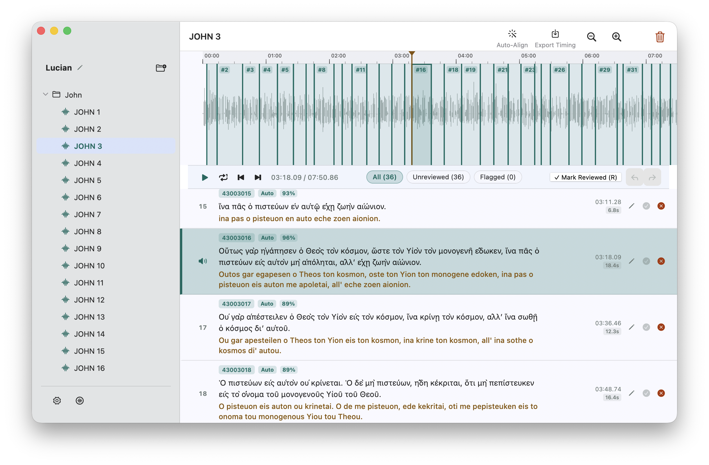
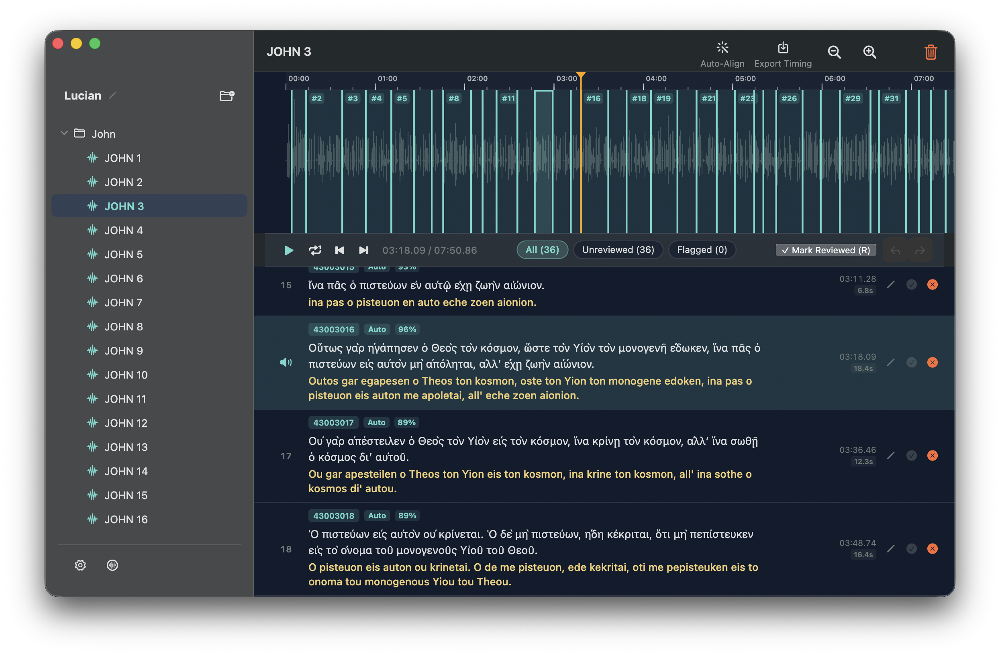

Isochron Studio Sync audio and text
Isochron pairs spoken recordings with written transcripts across 1,100+ languages. Built for audiobooks, language projects, and scriptures—running completely offline on your Mac.


How Isochron works
You don't need to be an audio engineer or computer scientist to synchronize your text and audio files.
Add Audio & Text
Drop in your spoken audio recordings (.mp3, .wav, or .m4a) and your transcript text files. Isochron automatically pairs matching files together.
One-Click Auto-Align
Click Auto-Align. The offline neural acoustic model listens to the recording and calculates exact start and end timestamps for every sentence and verse.
Review & Export
Audition sentences with a single keystroke, nudge boundaries if needed, and export clean, standard timing files for your app, eBook, or audio player.
Features
Everything you need for fast, high-precision forced speech alignment.
100% Offline & Private
Zero cloud processing. Your recordings and text never leave your computer, keeping your sensitive data private and working completely without an internet connection.
1,100+ Languages
Powered by Meta's MMS neural acoustic model and universal romanization. Works across diverse languages and scripts without custom pronunciation dictionaries.
Free & Open Source
Isochron is freely accessible to everyone under an open-source license. Explore the code, contribute, or inspect the engine directly on GitHub.